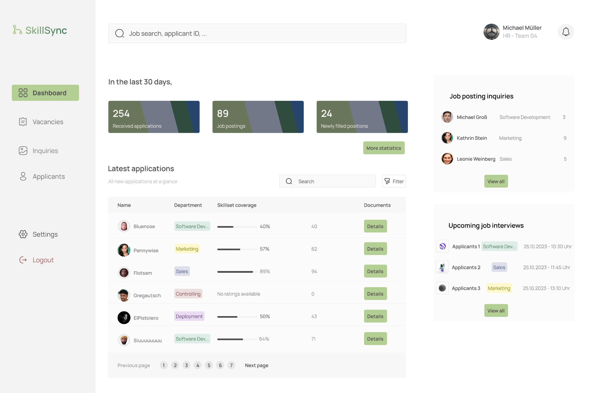
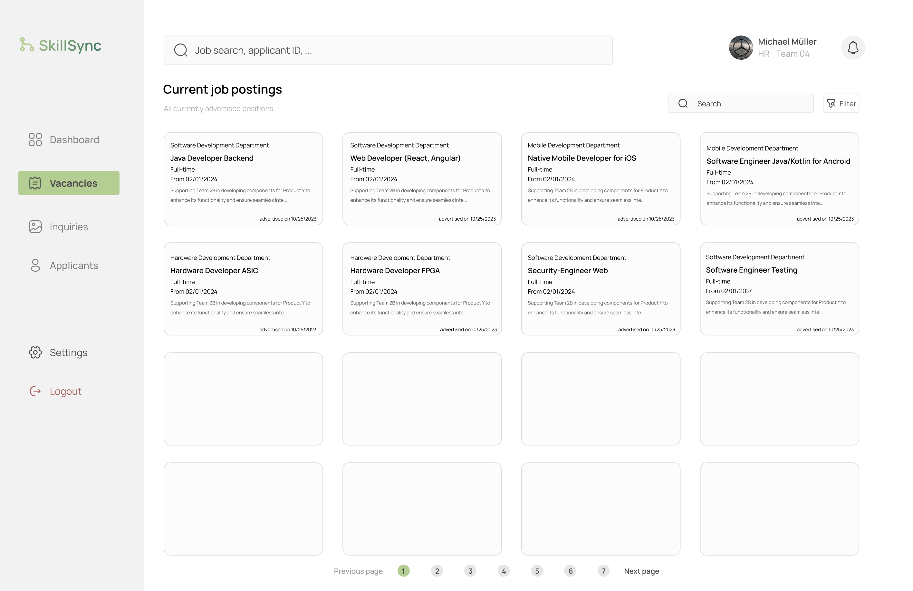
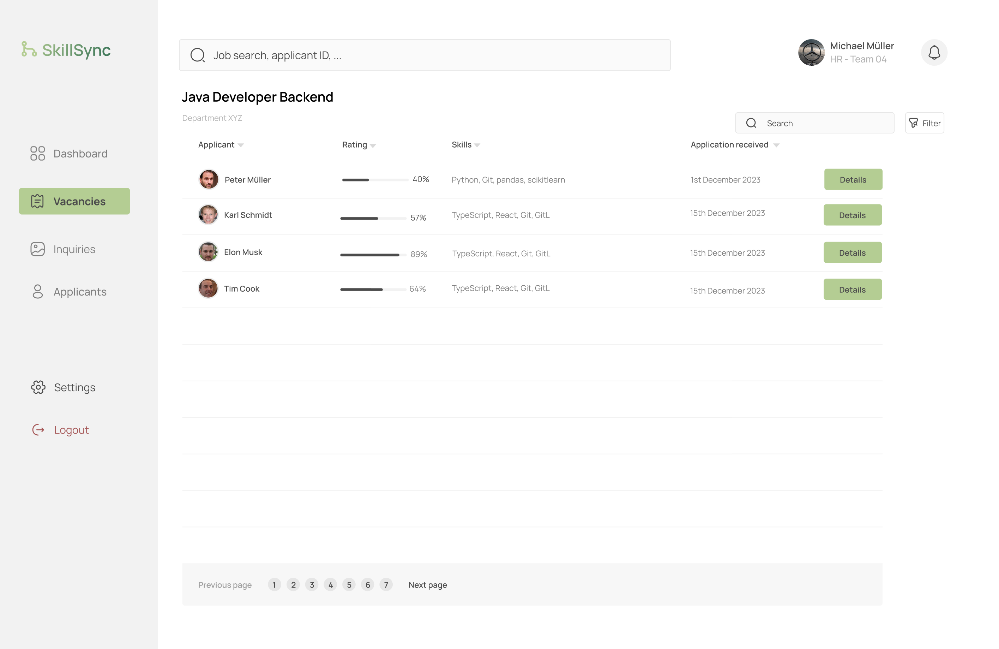
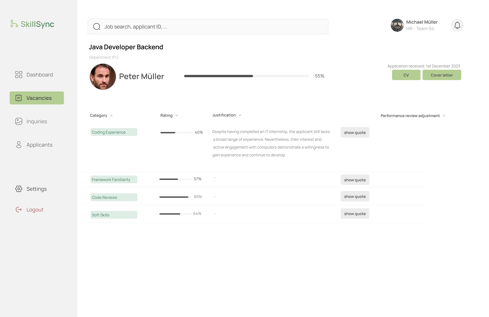

4 Implementation
4.1 Frontend
4.1.1 Design
For the frontend design, we first created a mockup with Figma to get a better idea of what we wanted the website to look like. When you open the website, you will see a dashboard, that gives you a great overview over everything an human resources employee needs to know. You can see how many job postings are open, how many applications you have received and how many people you have hired over the last 30 days.

After clicking on the ‘Vacancies’ button on the left side, you will see an overview over all open job postings. You can see the job title, the department and since when this job posting is online. You can also see the first few words of the job description.

If you then wish to see who has applied to a specific job posting, you can simply click the job posting itself and you will see an overview over all applications. You can see the name of the applicant, the date of when the application was received and their rating based on the required skill set for the position they applied to.

For further information about the applicant and their rating, you can click on the ‘Details’ button and you will see a detailed overview over the applicant. You can see their name, their email address, their phone number, their address and their rating based on the required skill set for the position they applied to with a justification and a original quote from their cv. You also have the option via the buttons on the right side to view and download their cv and cover letter.

4.1.2 Development
For development we used React to create the frontend of the website and as language we decided on using TypeScript instead of JavaScript. We used React because it is a very popular frontend framework and also because it is great for creating reusable components. For creating components, we used the Material UI library to get a nice and uniform look through the easy customization of each component provided by Material UI. For navigation, we used the React Router library to create the routes for the different pages.
Regarding project management for both, frontend and backend, we used GitHub Projects to create a Kanban board to keep track of our tasks and to assign them to different team members. We also used Pull Request to review each others code and to make sure that the code is up to our standards. In our opinion, reviewing each others code is a great way to learn from each other, to learn reading and understanding foreign code and to improve our own coding skills. And as a nice side effect of using GitHub Projects, we were able to keep track of our progress and to make sure, that we are on track with our project.
For Routing through the different pages, we used the React Router library to create the routes. We created a API module so that we have a standardize and easy way to fetch data from our backend REST-API. In regards to TypeScript types we defined all types object orientated like we designed them in the backend and used them throughout the project to make sure that we have a consistent type system.
When it comes to creating components, we divided our mockup into smaller parts and created a component for each part. We always tried to create reusable components to make sure that we have a consistent look throughout the website. To ensure that the components don’t become too big, we also created smaller helper components to make sure that the components are easy to understand and to maintain. We also created a theme for the website to make sure that we have a consistent look throughout the website.
4.2 Backend
4.2.1 Design
For designing the backend, we used the Entity Relationship Diagram (ERD) to get a better idea of what we wanted the database to look like and we also used class diagrams to model a raw structure of the backend.
4.2.2 Development
Since we are making request to GPT-4, we decided to use Python for the backend and used Flask to create the API for our frontend. Our databases are setup in a docker container and we used two different types: a relational database and a document database. For the relational database we used MySQL and for the document database we used MongoDB.